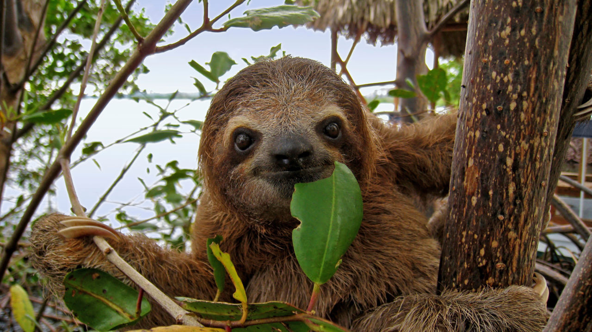

What primary consumers eat
In terrestrial ecosystems, typical occupants of the higher levels of
the trophic pyramid are herbivores (on level two) and carnivores
(whether active predators or scavengers).
Marine ecosystems differ from terrestrial ones in that there is an
abundance of food available in the form of suspended organic matter:
these particles include phytoplankton
(autotrophic micro-organisms that
are typically photosynthetic and often unicellular),
zooplankton (heterotrophic animals such
as krill that feed on phytoplankton), and faecal pellets
that rapidly transport organic matter to the sea floor.
The fate of these particles, as with any other sedimentary particle,
depends on the energy levels at the sea floor.
In high energy environments, the particles will typically be suspended in
the seawater as waves and currents churn them up;
in low energy environments, the particles will settle on the sea bed
and eventually be buried.
As such, suspension feeders –
which feed on particles in suspension –
will be more abundant in high-energy environments,
whereas deposit feeders – which extract organic material
(particles and the bacteria that degrade them) from the mud of the sea bed
– tend to proliferate low energy environments.
Where primary consumers live
The proportion of infaunal consumers may reflect
oxygen levels within the sediment, but is particularly vulnerable
to distortion by preservational processes.
(Why might this be?
You should think about this again after the Taphonomy session).
The nature and abundance of epifaunal consumers may
reflect the firmness of the substrate – soupy sediment lacks attachment
points and can
only be colonized by ‘floating’ taxa (icebergs / snow shoes).
Quiz
Hopefully you are starting to see how the observed abundance of organisms in
different sediment niches can be used to infer the environment.
Let’s put this to the test!
-
A community contains many suspension feeders, and few deposit feeders.
Is it more likely to live in:
-
The quiet, still waters of a tropical lagoon
-
Hmm... In calm waters, food particles quickly settle to the sea floor.
This means that there aren’t enough particles suspended in the water to
keep suspension feeders well fed. But deposit feeders can feast on the
particles that settle out into the muds – so these will be more abundant
than suspension feeders.
-
The turbulent waters of a tidal, storm-ridden basin
-
Correct! Storms and tidal currents will frequenly lift food particles
out of the reach of deposit feeders, suspending them in the water column.
-
A community lives in a setting that periodically experiences low oxygen
conditions. Are its consumers likely to be:
-
Infaunal
-
With little oxygen dissolved in the seawater,
it's difficult to meet the oxygen requirements for metabolism whilst
buried below the sediment – oxygen's rate of diffusion is low, so a lot
of energy must be expended to keep burrows ventilated.
-
Epifaunal
-
Correct! Low oxygen levels pose a big obstacle to living within the sediment.
-
A community lives below storm wave base on the continental slope.
Is it likely to be dominated by:
-
Suspension feeders
-
Hmm... Below storm wave base, it's hard to imagine a source of energy that
will consistently create currents to suspend food particles.
-
Deposit feeders
-
Correct! Below storm wave base, it's hard to imagine a source of energy that
will consistently create currents to suspend food particles.
What little food rains in from above will settle into the sea floor sediments.
-
A community contains many epifaunal individuals, but few infaunal.
Is it more likely to inhabit:
-
A rocky foreshore
-
This highly erosive setting is likely to be amply oxygenated to allow
for infaunal organisms: the challenge they'll face is burrowing into
the rocky substrate, which may host a rich diversity of epifaunal
suspension feeders and vagrant grazers.
-
A sandy beach
-
Beach waves introduce plenty of oxygen into the water, and a firm sand
can be a great substrate for burrowing – but wave action makes
dwelling on the surface less attractive.
The balance here favours infaunal organisms.